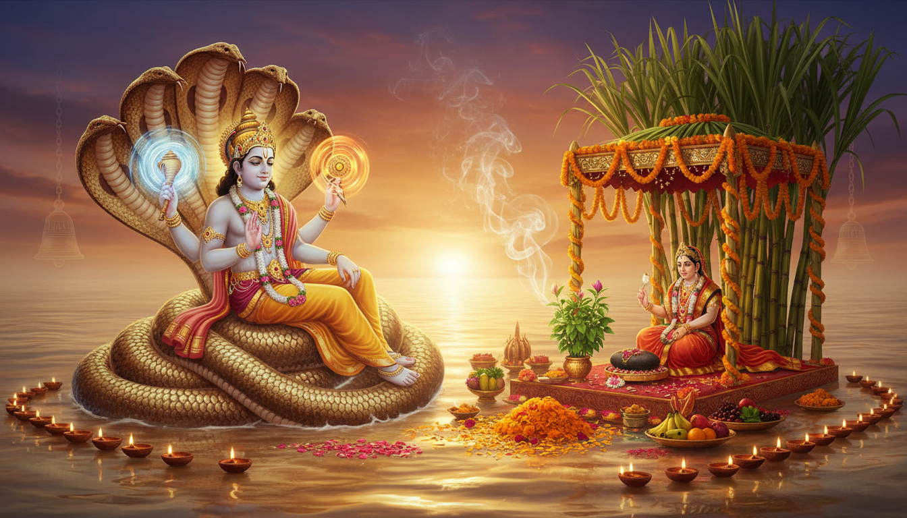

हिंदू धर्म में एकादशी तिथियों का स्थान सर्वोपरि है, परंतु 'देव उठनी एकादशी' का आध्यात्मिक और सांस्कृतिक वैभव अत्यंत विशिष्ट है। चार महीने की लंबी योग निद्रा के बाद जब सृष्टि के पालनहार भगवान विष्णु जागृत होते हैं, तो समस्त ब्रह्मांड में 'तमस' का अंत होता है और 'सत्व' व 'जागृति' की नई ऊर्जा का संचार होता है। इसी मंगलमयी दिन के साथ 'चातुर्मास' का विराम होता है और विवाह, गृह प्रवेश व अन्य शुभ कार्यों की शास्त्रोक्त शुरुआत होती है। वर्ष 2026 में यह महापर्व भक्ति और परंपरा के अनूठे संगम के साथ मनाया जाएगा।

देव उठनी एकादशी का अर्थ और आध्यात्मिक महत्व
'देव उठनी एकादशी' का शाब्दिक अर्थ है— वह ग्यारहवीं तिथि जब 'देव' (भगवान विष्णु) अपनी निद्रा से 'उत्थान' करते हैं। इसे प्रबोधिनी एकादशी के नाम से जाना जाता है। यहाँ यह समझना आवश्यक है कि आषाढ़ मास में आने वाली 'हरि शयनी एकादशी' भगवान के शयन (सोने) का प्रतीक है, जबकि कार्तिक मास की यह एकादशी उनके जागने का उत्सव है।
मान्यता है कि भगवान विष्णु के जागने से पूरी सृष्टि पर उनके आशीर्वाद की वर्षा पुन: प्रारंभ हो जाती है। यह पर्व मानसिक जड़ता के समापन और आध्यात्मिक चेतना के उदय का प्रतीक है।
वर्ष 2026 की महत्वपूर्ण तिथियां और शुभ मुहूर्त
शुद्ध पंचांग गणना के अनुसार, वर्ष 2026 में देव उठनी एकादशी की तिथियां और पारण का समय इस प्रकार है:
| विवरण | तिथि एवं समय |
|---|---|
| देव उठनी एकादशी व्रत तिथि | शुक्रवार, 20 नवंबर 2026 |
| एकादशी तिथि का प्रारंभ | 20 नवंबर 2026 को सुबह 07:16 बजे से |
| एकादशी तिथि का समापन | 21 नवंबर 2026 को सुबह 06:31 बजे तक |
| पारण (व्रत खोलने) का शुभ समय | 21 नवंबर 2026 को दोपहर 01:02 बजे से 03:17 बजे तक |
विशेष परामर्श: व्रत का पारण द्वादशी तिथि के भीतर करना अनिवार्य है। शास्त्रानुसार, पारण के समय सबसे पहले तिल मिश्रित जल ग्रहण करना अत्यंत फलदायी माना गया है।
पूजा सामग्री की विस्तृत सूची
भगवान विष्णु और माता तुलसी की शास्त्रोक्त आराधना के लिए निम्नलिखित वस्तुओं का संचय करें:
- मंडप निर्माण: गन्ने (सजावटी मंडप या छत्र बनाने हेतु)।
- विशेष ऋतु फल व वनस्पति: आंवला, चने की भाजी, सिंघाड़ा, बेर, शकरकंद और मूली।
- पूजन वस्तुएं: हल्दी, कुमकुम, चंदन, अक्षत (चावल), कपूर, अगरबत्ती, कलावा (मौली धागा) और शुद्ध घी का दीपक।
- भोग व नैवेद्य: पंचामृत, तुलसी दल, ऋतु फल और घर में बनी केसरिया खीर या सूजी का हलवा।
- अलंकरण सामग्री: माता तुलसी के लिए लाल चुनरी, चूड़ियां, बिंदी और संपूर्ण श्रृंगार सामग्री।
- विष्णु स्वरूप: भगवान शालिग्राम या विष्णु जी की प्रतिमा।
विस्तृत एवं शास्त्रोक्त पूजन विधि
देव उठनी एकादशी की पूजा अत्यंत श्रद्धा और नियमों के साथ की जाती है। इसकी क्रमबद्ध प्रक्रिया नीचे दी गई है:
- ब्रह्म मुहूर्त स्नान: एकादशी के दिन सूर्योदय से पूर्व उठकर गंगाजल मिश्रित जल से स्नान करें और स्वच्छ पीले वस्त्र धारण करें।
- चरण आकृति: घर के आंगन या पूजा स्थल को स्वच्छ करें। चूने या गेरू (लाल मिट्टी) की सहायता से भगवान विष्णु के चरणों की आकृति बनाएं। इन चरणों को फल और फूलों से सजाएं।
- गन्ने का मंडप: तुलसी के पौधे के चारों ओर गन्ने का मंडप या छत्र बनाएं। यह मंडप दिव्य विवाह का प्रतीक होता है।
- शालिग्राम स्थापना: मंडप के बीच में माता तुलसी और भगवान विष्णु के स्वरूप शालिग्राम को स्थापित करें। शालिग्राम को हल्दी और चंदन का तिलक लगाएं।
- भगवान को जगाना: शंख और घंटी बजाकर मंत्रों के साथ भगवान को जगाने का आह्वान करें। मुख्य रूप से "ॐ नमो भगवते वासुदेवाय" मंत्र का निरंतर उच्चारण करें।
- षोडशोपचार पूजन: भगवान को आंवला, चने की भाजी और अन्य ऋतु फल अर्पित करें। घी का दीपक जलाकर आरती करें।
- रात्रि जागरण: इस दिन रात्रि में जागरण कर विष्णु सहस्रनाम का पाठ करना और भजन कीर्तन करना विशेष रूप से कल्याणकारी माना गया है।
तुलसी विवाह: एक दिव्य मिलन
एकादशी के अगले दिन यानी द्वादशी (21 नवंबर 2026) को तुलसी विवाह का उत्सव मनाया जाता है। कुछ क्षेत्रों में यह उत्सव एकादशी से लेकर कार्तिक पूर्णिमा तक पांच दिनों तक चलता है।
- कन्यादान का फल: हिंदू धर्मग्रंथों के अनुसार, जिन दंपत्तियों की अपनी पुत्री नहीं है, यदि वे श्रद्धापूर्वक तुलसी और शालिग्राम का विवाह संपन्न कराकर 'कन्यादान' की रस्म निभाते हैं, तो उन्हें कन्यादान के समान ही महान पुण्य फल की प्राप्ति होती है।
- विवाह की रस्में: इस दिन माता तुलसी को दुल्हन की तरह लाल चुनरी और श्रृंगार से सजाया जाता है। शालिग्राम और तुलसी जी के फेरे कराए जाते हैं और मांगलिक गीत गाए जाते हैं। मान्यता है कि इस दिव्य विवाह के संपन्न होते ही पृथ्वी पर विवाह का शुभ सीजन (वेडिंग सीजन) विधिवत प्रारंभ हो जाता है।
पौराणिक कथाएँ: वृंदा का संकल्प और लक्ष्मी जी की प्रार्थना
इस पर्व से दो प्रमुख कथाएं जुड़ी हैं जो इसके महत्व को और अधिक गहरा करती हैं:
1. वृंदा और जालंधर की कथा: प्राचीन काल में वृंदा नाम की एक परम विष्णु भक्त महिला थी। उसके पतिव्रता धर्म के कारण उसका पति राक्षस जालंधर अजेय हो गया था। देवताओं की रक्षा के लिए भगवान विष्णु ने जालंधर का रूप धरकर वृंदा का सतीत्व भंग किया, जिससे जालंधर युद्ध में मारा गया। सत्य जानकर वृंदा ने क्रोध में विष्णु जी को पत्थर (शालिग्राम) बनने का श्राप दिया। कालांतर में वृंदा ने स्वयं को अग्नि को समर्पित कर दिया और उसकी राख से तुलसी का पौधा जन्मा। भगवान ने वृंदा की भक्ति से अभिभूत होकर उसे वरदान दिया कि वे शालिग्राम रूप में सदैव उसके साथ रहेंगे और उनकी पूजा तुलसी के बिना अधूरी मानी जाएगी।
2. देवी लक्ष्मी और विष्णु संवाद: एक अन्य कथा के अनुसार, देवी लक्ष्मी ने एक बार भगवान विष्णु से प्रार्थना की कि उनकी निद्रा का कोई निश्चित समय नहीं है। कभी वे वर्षों जागते हैं और कभी अचानक युगों तक सो जाते हैं, जिससे सृष्टि का संतुलन बिगड़ जाता है। लक्ष्मी जी के इस अनुरोध पर भगवान ने स्वीकार किया कि वे अब से हर वर्ष वर्षा ऋतु के चार महीने (चातुर्मास) योग निद्रा में रहेंगे, ताकि देवताओं और मनुष्यों को विश्राम और आत्म-चिंतन का समय मिल सके। देव उठनी एकादशी इसी नियमित निद्रा के अंत का उत्सव है।
एकादशी व्रत के लाभ
इस पवित्र व्रत का श्रद्धापूर्वक पालन करने से निम्नलिखित लाभ प्राप्त होते हैं:
- आध्यात्मिक शुद्धि: यह व्रत मन की अशांति को दूर कर एकाग्रता और आत्मिक शांति प्रदान करता है।
- पाप मुक्ति: मान्यता है कि यह एकादशी पिछले जन्मों के संचित पापों (Bad Karma) का नाश कर मोक्ष का मार्ग प्रशस्त करती है।
- सुख-समृद्धि: भगवान विष्णु की कृपा से परिवार में धन-धान्य, सुरक्षा और आरोग्य का वास होता है।
- विवाह बाधा निवारण: जो लोग विवाह में बाधाओं का सामना कर रहे हैं, उनके लिए इस दिन तुलसी विवाह संपन्न करना अत्यंत शुभ माना जाता है।
निष्कर्ष
देव उठनी एकादशी 2026 केवल एक धार्मिक अनुष्ठान नहीं, बल्कि जीवन में नई शुरुआत और अनुशासन का संदेश है। यह दिन हमें सिखाता है कि निद्रा और आलस्य का त्याग कर कर्म और भक्ति के मार्ग पर जागृत होना ही जीवन की वास्तविक सफलता है। इस शुभ अवसर पर भगवान विष्णु और माता तुलसी की कृपा आप सभी पर बनी रहे, और आपके जीवन में सुख, शांति और मांगलिकता का उदय हो।
।। ॐ नमो भगवते वासुदेवाय ।।
Sources
26. Source 27.)
27. Source 28.)
- Devutthan Ekadashi 2026: Date, Tulsi Vivah & Parana Muhurat - Astro Zindagi
- Dev Uthani Ekadashi 2026: Date, Puja Vidhi, Katha & Mantra - 99Pandit
- Dev Uthani Ekadashi 2026: Date, Time, Puja Vidhi and Significance - Anytime Astro
- Chaturmas 2026 Date, Calendar, Tithi & Muhurat | Ekadashi List & Start-End Time
- Tulsi Vivah 2026: Date, Puja Samagri & Procedure - 99Pandit
- Tulsi Vivah 2026 Date and Muhurat - Astroyogi.com
- Devutthana Ekadashi 2026 : Vrat Katha, Puja Vidhi, & Mantra
- Ekadashi Tithi 2026 Dates List: Fasting Calendar and Timings July 02, 2026, Thursday - Astroyogi.com
- Unlocking the Power of Dev Uthan Ekadashi: Pooja Essentials for Spiritual Awakening and Auspicious Beginnings - Poojalok
- Thakur Prasad Calendar 2026: Hindu Panchang, Festivals & Muhurat - Thakur Prasad Calendar
- Dev Uthani Ekadashi: The Divine Awakens - Dws Jewellery
- Marriage Dates in 2026 With Shubh Muhurat and Favorable Nakshatras - Astroyogi.com
- Griha Pravesh Dates in July 2026: Best Days to Move - Boxigo
- Tulsi Vivah 2026: Date, Puja Muhurat, Rituals and Astrology - Dr. Vinay Bajrangi
- Tulsi Vivah 2026: Date, Vidhi, Muhurat, Story, Significance
- Ekadashi in July 2026: Complete Guide to Yogini, Gauna & Devshayani Ekadashi Dates, Timings, Vrat Rules and Significance - The Economic Times
- July 2026 Hindu Calendar: Complete List of Festivals, Ekadashi Dates, Guru Purnima & Important Hindu Observances - The Economic Times
- Kartik Maas - Significance, Festivities & Ritual Practices - Cycle.in
- 2026 Ekadashi Fasting days for Fort St. John, British Columbia, Canada - Drik Panchang
- 0191 Prabodhini Ekadashi, Dev Uthani Ekadashi Vrat, fasting date and Parana time for New Delhi, NCT, India - Drik Panchang
- 2026 Devshayani Ekadashi fasting date for Novi, Michigan, United States - Drik Panchang
- Shravan Month 2026 (Sawan Maas): Date, Importance, Story, Fasting Rules - Rudraksha Ratna
- Dev Uthani Ekadashi: Remedies As Per Your Zodiac Sign | Times of India
- Devuthani Ekadashi 2025 Remedies For All Zodiac Signs - The Times of India
- Devuthani Ekadashi 2025: Know the Correct Date, Shubh Muhurat, and Parana Time
- Ekadashi 2026: Complete Calendar of All Dates, Parana Time & Vrat Vidhi - Haritual
- Gujarati Calendar 2026 Free - ગુજરાતી પંચાંગ 2026 Pdf - Calendar Gujarati
- Auspicious 2026 Wedding Dates and Destination Wedding Guide | Ummed Hotels India
- Ekadashi in July 2026: Check dates, timings, parana, significance & vrat rules for Yogini and Devshayani Ekadashi - The Economic Times
- Ekadashi in July 2026: Date, parana time, puja vidhi, mantra and significance
- Drik Panchang - online Hindu Almanac and Calendar with Planetary Ephemeris based on Vedic Astrology.
- 2026 Vaisnava Calendar | ISKCON Calendar for New Delhi, NCT, India - Drik Panchang
- Ekadashi 2026 - Complete List with Dates, Significance & Fasting Guide | I Am That